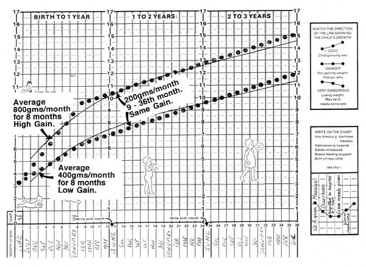

Expanded Nursing Uganda Explanation
Growth Monitoring and Promotion should be understood beyond a short definition. Link the concept to patient history, focused assessment, common risks, nursing priorities, documentation and evaluation of outcomes.
01 Growth Monitoring
Growth monitoring involves regularly weighing a child, plotting the weight on a child health card (also known as a growth chart), interpreting the results, and counseling parents or caregivers. It's a proactive and preventative health measure to track a child's developmental progress over time and identify potential issues early.
Monitoring includes a range of anthropometric measurements to provide a holistic view of the child's physical development. These parameters are compared against standardized growth charts, which show the typical growth patterns of healthy children.
- Height for age: Indicates linear growth and identifies stunting (chronic malnutrition) or tall stature. It reflects long-term nutritional status and overall health.
- Weight for age: A general indicator of nutritional status and acute malnutrition (underweight). It reflects both current and past nutritional experience.
- Head circumference: Especially important for infants and toddlers (usually up to 2-3 years of age), as it's a proxy for brain growth and development. Deviations can indicate neurological issues.
- Body Mass Index (BMI) for age: Calculated from weight and height, BMI for age is used to screen for overweight, obesity, and wasting (acute malnutrition). It is a better indicator of body proportionality than weight-for-age alone.
- Skinfold thickness: Measures subcutaneous fat, providing an estimate of body fat reserves. Commonly measured at the triceps and subscapular areas, it helps assess nutritional status, particularly for under- and over-nutrition.
- Early Recognition of Abnormal Growth: Children whose growth deviates significantly from the standard growth curve are easily recognized from the growth chart, allowing for timely intervention.
- Identification of Chronic Disorders: Abnormal growth patterns can be early indicators of underlying chronic diseases, endocrine disorders, or genetic conditions, facilitating early diagnosis and treatment.
- Attainment of Optimal Nutritional Status: Regular monitoring helps in assessing the effectiveness of nutritional interventions and guides dietary adjustments to improve overall nutrition.
- Supports Research and Public Health: Longitudinal growth data contributes valuable information for public health research, identifying trends, and evaluating the impact of health programs on child populations.
- Empowers Parents/Caregivers: It helps parents to gain nutritional knowledge, reduces anxiety by providing clear information about their child’s health, and offers reassurance when growth is on track. It fosters active parental involvement in their child's health.
- Addresses Influential Psychosocial and Social Factors: Deviations in growth can signal underlying psychosocial issues. Growth monitoring helps identify if there are influential psychological or social factors (e.g., parental neglect or separation, orphans, family stress) that may affect the growth of the child, prompting social support or intervention.
- Determines Natural Short Stature: It helps parents understand if their child's short stature is due to genetic predisposition (familial short stature) rather than a pathological cause, reducing unnecessary worry.
- Prevents Illness, Malnutrition, and Death: Early identification of growth faltering allows for interventions that can prevent progression to severe malnutrition, reduce susceptibility to illness, and ultimately prevent mortality.
- Evaluates Health or Nutritional Interventions: It serves as a crucial tool to evaluate the effectiveness of health interventions, such as exclusive breastfeeding campaigns, complementary feeding programs, or deworming initiatives, by observing their impact on growth patterns.
- Determines if the Child is Failing to Thrive: A consistent pattern of poor weight gain or growth across multiple parameters can indicate "failure to thrive," a clinical term for inadequate growth, necessitating comprehensive medical and social assessment.
02 Growth Promotion
To effectively combat growth problems and ensure optimal child development, a comprehensive approach to growth promotion is essential. This involves a continuum of care starting from the antenatal period and continuing through various stages of childhood, integrating health, nutrition, and social support.
- Prevent, Detect, and Treat Pregnancy-Related Complications: Regular check-ups help manage conditions like pre-eclampsia, gestational diabetes, and infections, ensuring a healthy environment for fetal growth.
- Provide Advice on Breastfeeding: Educate expectant mothers on the benefits of exclusive breastfeeding, proper latch, and positioning, preparing them for successful initiation post-delivery.
- Provide Health Education on Dangers of Smoking, Alcohol Consumption, and Drug Abuse: Emphasize the severe adverse effects of these substances on fetal development, promoting a healthy pregnancy.
- Health Education on Good Baby Care: Prepare parents for newborn care, including hygiene, safe sleep practices, and early developmental stimulation.
- Identify Parents Who May Need Extra Support: Screen for and provide targeted support to parents with learning disorders, mental health problems, or other vulnerabilities that might impact their ability to care for the child.
- Health Education on Good Nutrition: Advise on balanced dietary intake for pregnant women, including essential micronutrients, to prevent maternal and fetal malnutrition.
- Provide Preventive Treatment: Administer Intermittent Presumptive Treatment (IPT) for malaria in endemic areas, iron and folic acid supplements to prevent anemia, and deworming tablets where necessary.
- Monitor the Progress of Pregnancy: Regular assessments of fetal growth, maternal weight gain, and general health to identify any deviations.
- Health Education on Hygiene: Promote handwashing, safe water practices, and personal hygiene to prevent infections for both mother and baby.
- Encourage Hospital Delivery: Advocate for delivery in health facilities with skilled birth attendants to manage delivery complications and ensure immediate postnatal care for mother and baby.
- Physical/Medical Examination of the Child: Comprehensive newborn check-up to detect congenital anomalies, birth injuries, and establish baseline health.
- Immunization: Administer initial vaccinations like Polio 0 (at birth) and BCG (Bacillus Calmette–Guérin) for tuberculosis prevention.
- Exclusive Breastfeeding: Promote and support exclusive breastfeeding from birth up to six months of age, providing all necessary nutrients and antibodies.
- Hygiene - Cord Care: Educate on proper umbilical cord care to prevent infection.
- Growth Monitoring/Weighing: Initial weighing and assessment to establish birth weight and track early weight gain.
- Early Detection of Disease: Vigilance for signs of common newborn illnesses like fever, diarrhea, or respiratory distress, and prompt treatment.
- Physical Examination: Comprehensive check-up to assess overall health and development.
- Immunization: Administer 6-week vaccinations, typically including Polio 1, DPT 1 (Diphtheria, Pertussis, Tetanus), Hib 1 (Haemophilus influenzae type b), and Hepatitis B 1.
- Care Safety: Educate parents on infant safety measures, including safe sleep, preventing falls, and childproofing.
- Growth Monitoring: Regular weighing and plotting on the growth chart.
- Proper Nutrition: Reinforce exclusive breastfeeding and address any feeding difficulties.
- Hygiene: Continue education on general infant hygiene.
- Early Detection of Disease: Continued emphasis on recognizing and seeking care for signs of illness.
- Immunization: Follow the national immunization schedule: At 10 weeks: Polio 2, DPT 2, Hib 2, Hep B 2.
- At 14 weeks: Polio 3, DPT 3, Hib 3, Hep B 3.
- Check Weight: Consistent growth monitoring at each visit to track progress and identify any faltering.
- Developmental Screening: Brief checks for age-appropriate developmental milestones.
- Immunization: Administer the Measles vaccine at 9 months. Ensure all other immunizations are up-to-date.
- Respond to Mothers' Concerns: Actively listen to and address parental concerns about their children’s development, behavior, or health.
- Prevent, Detect, and Treat Illnesses: Ongoing vigilance for common childhood illnesses, prompt diagnosis, and appropriate treatment.
- Monitor Growth: Continue regular growth monitoring, including height and weight, to track long-term trends.
- Hygiene: Reinforce practices of good hygiene, especially as children become more mobile and exposed to different environments.
- Good Nutrition: Provide guidance on appropriate complementary feeding (after 6 months), portion sizes, diverse food groups, and healthy eating habits as the child grows.
- Developmental Guidance: Provide anticipatory guidance on age-appropriate stimulation, language development, and social-emotional growth.
- Review at School Entry: A comprehensive review around school entry provides a crucial opportunity to ensure overall child readiness.
- Immunization Status: Check that all immunizations are up-to-date according to the national schedule, including booster doses if required, to ensure protection before entering a group setting.
- Access to Healthcare: Ensure children have continued access to routine immunization and dental care, which are vital for overall health.
- Assessment and Intervention for Problems: Provide appropriate assessment and intervention for any physical, social, emotional, or developmental problems identified before school entry, ensuring children are well-prepared for learning.
- Information for Parents and School Staff: Provide children, parents, and school staff with information about specific health issues relevant to the school environment, such as allergies, chronic conditions, or healthy lifestyle choices.
- Check Weight and Height: Continue anthropometric measurements to monitor growth trends as the child approaches school age.
- School Nurse Checks: Weight and Height: Routine anthropometric measurements are taken to continue growth monitoring within the school setting.
- Reviews Immunization Status: The school nurse verifies that the child's immunization record is complete and up-to-date, important for preventing outbreaks in schools.
- Vision and Hearing Screening: Often conducted at school entry to detect any impairments that could affect learning.
- Basic Health Assessment: A general check of the child's health to identify any immediate concerns or conditions that might require ongoing support or accommodation in school.
03 Child Health Card
The Child Health Card is a vital clinical tool designed for the comprehensive monitoring of children's health from birth up to 5 years of age. While specifically mentioned as a tool used by the Ministry of Health (MoH) Uganda, similar child health records or growth charts are employed globally to track growth, immunizations, and overall well-being. It serves as a continuous record of a child's health journey, facilitating informed decision-making by healthcare providers and empowering parents in their child's care.
04 Components of the Child Health Card
A well-designed Child Health Card typically includes several key sections to capture essential information:
- Family Information: This section captures crucial demographic data, including the child's name, birth weight, sex, date of birth, and birth order. It also records parents' details (names, occupations) and the family's address. This information helps in identifying the child and understanding their socio-economic context.
- Immunization Schedule: A pre-printed or designated section that lists the recommended immunizations according to the national schedule, along with spaces to record the dates of administration and the next due dates. This ensures children receive timely vaccinations to protect against preventable diseases.
- Growth Chart: A graphical representation used to track key growth parameters, most notably weight for age. It typically includes percentile curves or Z-score lines that allow healthcare providers to plot a child's measurements and compare them against a reference population, identifying patterns of healthy growth, faltering growth, or overweight.
- Interpretation Section: Provides clear guidelines and instructions for healthcare workers on how to interpret the plotted growth trends. This helps in understanding the significance of a child's growth pattern (e.g., if a child is growing well, showing signs of malnutrition, or at risk of overweight).
- Vitamin A Supplementation: A record-keeping area for documenting the dates and dosages of Vitamin A administered to both the child and, sometimes, the mother (postpartum). Vitamin A is crucial for immune function, vision, and growth.
- Special Care Categories: This section allows healthcare providers to flag or indicate children who require specific attention or follow-up due to particular circumstances or risk factors.
- Remarks and Referrals: A free-text area where healthcare providers can note additional comments, observations, or significant events in the child's health history. It also serves as a log for referrals to other health services or specialists.
Child demographics specifically include: Child’s name, birth weight, sex, date of birth, birth order, mother’s occupation, father’s name and occupation, and where the child lives.
05 Counseling the Mother After Weighing the Child
Effective counseling is a critical component of growth monitoring, empowering mothers with knowledge and practical advice tailored to their child's growth status. The approach differs based on whether the child has gained adequate weight or not.
When a baby in this age group shows healthy weight gain, the counseling focuses on reinforcement and positive affirmation, while also subtly assessing for any underlying issues or misconceptions.
- Acknowledge and Congratulate: Show the mother the growth curve on the card and congratulate her for the child’s healthy weight gain. This positive reinforcement encourages continued good practices.
- Assess Breastfeeding Knowledge: Gently inquire about what the mother knows or believes about exclusive breastfeeding (feeding only breast milk, no other foods or liquids). This helps identify any gaps in understanding.
- Check for Maternal Well-being: Ask if the mother is experiencing any sickness or problems (physical or emotional), as maternal health directly impacts breastfeeding and infant care.
- Reinforce Positive Practices: Find out how the mother is currently feeding her child and reinforce correct and effective breastfeeding practices.
If the baby has not gained weight as expected, the counseling approach shifts to a more investigative and supportive dialogue to identify potential causes and provide targeted solutions.
- Create Rapport: Begin by establishing a trusting and supportive environment. This is crucial for open communication, as mothers may feel sensitive or blamed.
- Explain the Growth Curve: Show the mother the child's growth curve and explain, in a non-judgmental way, that the baby did not gain weight as expected. Focus on the factual observation.
- Inquire About Child's Health: Ask if the baby is sick or has been experiencing any health problems (e.g., fever, diarrhea, cough), which could affect appetite or absorption.
- Assess Feeding Practices (Non-Breastmilk): Find out if the baby is being fed on other foods, liquids, or formula in addition to breast milk. This helps identify practices that might displace breast milk intake.
- Assess Maternal Nutrition: Inquire if the mother’s nutrition is appropriate and adequate, as maternal diet can affect breast milk supply and quality (though quantity is primarily supply-demand driven).
- Check for Sucking Problems: Ask if the baby appears to have problems with sucking (e.g., weak suck, difficulty latching), which could indicate oral issues or neurological concerns.
- Assess Latch and Positioning: Find out if the mother has problems with attaching the baby to the breast during breastfeeding, as poor latch is a common cause of insufficient milk transfer.
- Frequency of Feeding: "How many times a day and night does the baby breastfeed?" (A baby should typically feed 8-12 times in 24 hours).
- Duration of Feeding: "Does the baby breastfeed long enough to empty the breast?" (Full emptying ensures the baby gets the richer, hindmilk).
- Introduction of Other Foods/Liquids: "Is the child fed on other liquids or foods besides breast milk?"
- Maternal Separation: "Does the mother stay away from the baby any time during the day?" (Separation can affect feeding frequency and milk supply).
- Frequent Feeding: Encourage the mother to breastfeed frequently, at least 8-10 times per day (or on demand, whenever the baby shows signs of hunger).
- Complete Breast Emptying: Emphasize encouraging the mother to allow the baby to feed long enough to empty one breast before moving to the other.
- Correct Latch and Position: Help the mother to know and practice the correct position and attachment of the baby to the breast. This is critical for effective milk transfer.
- Exclusive Breastfeeding: Reiterate and encourage exclusive breastfeeding unless there are compelling medical reasons for supplementation.
- Immunization Status: Check the child’s immunization status and ensure all due vaccines are administered.
- Vitamin A: Check and administer Vitamin A if due and appropriate for age.
Counseling continues to build upon previous advice, now incorporating the introduction of complementary foods.
- Repeat Counseling Steps: Follow similar counseling steps as for 0-6 months with adequate weight gain, reinforcing positive practices.
- Inquire About Complementary Foods: Specifically ask about the additional foods being given besides breast milk (e.g., types, frequency, consistency, quantity) to ensure appropriate and adequate complementary feeding.
For this age group, inadequate weight gain often points to issues with complementary feeding or ongoing illness.
- Explain Growth Status: Show the mother the card and explain, gently, that the baby did not
06 Nursing Uganda Clinical Lens
Use Growth Monitoring and Promotion as a practical nursing topic, not only a memorized definition. Adapt assessment and care to age, weight, development, caregiver knowledge and family support.
- What to understand first: define growth monitoring and promotion, identify the normal or expected pattern, then explain what changes when the patient is unwell.
- Why it matters in care: the nurse must recognize risk early, explain findings clearly, document accurately and know when to escalate.
- How to revise it: connect each point to assessment, nursing diagnosis or care problem, intervention, rationale and evaluation.
07 Assessment Guide
- Airway, breathing, circulation, hydration, temperature, feeding, activity and danger signs.
- Weight-based medicines, immunization status, growth, development and caregiver concerns.
- Signs that may be subtle in children, including lethargy, poor feeding, fast breathing or convulsions.
08 Nursing Priorities, Rationales and Outcomes
- Use age-appropriate communication and involve the caregiver.
- Prevent dehydration, hypothermia, medication errors and delayed referral.
- Teach home care, danger signs and follow-up clearly.
The rationale for these priorities is patient safety: nursing actions should prevent deterioration, reduce discomfort, support recovery and create clear evidence for the next caregiver.
- Expected outcome: The child is clinically improving, caregiver instructions are understood and follow-up is arranged.
09 Patient Teaching and Revision Check
- Explain growth monitoring and promotion in simple language the patient or caregiver can repeat back.
- Teach warning signs, medicine or follow-up instructions, hygiene or lifestyle points where relevant.
- For exams, prepare a short answer using: definition, causes or risk factors, signs, assessment, management, complications and prevention.
- For ward practice, document baseline findings, actions taken, patient response and the plan for review.
Illustrations and Diagrams (1)

Related Video Lectures
Watch nursing lecture videos on YouTube for this topic. Opens in a new tab.
Watch on YouTubeExternal link: YouTube may use its own cookies and terms. Nursing Uganda is not affiliated with YouTube.